img2threejs — 사진을 코드로 된 3D 모델로
코딩 에이전트는 시키는 걸 대부분 만들지만, 혼자서는 못 하는 일이 아직 있어요. 영상은 그 빈틈을 메우는 GitHub 저장소 8개를 차례로 보여 줘요. 첫 번째는 사진 한 장으로 3D 모델을 만드는 스킬이에요.
img2threejs는 이미지 속 물건을 Three.js 코드만으로 다시 만들어요. 모델이 전부 코드라서 에이전트에게 색을 바꾸거나 조명을 손봐 달라고 말로 시키면 돼요. 3D 툴을 따로 배우지 않아도 되고, 만든 모델을 랜딩 페이지에 넣어 애니메이션을 주거나 방문자가 직접 돌려 보게 할 수도 있어요.
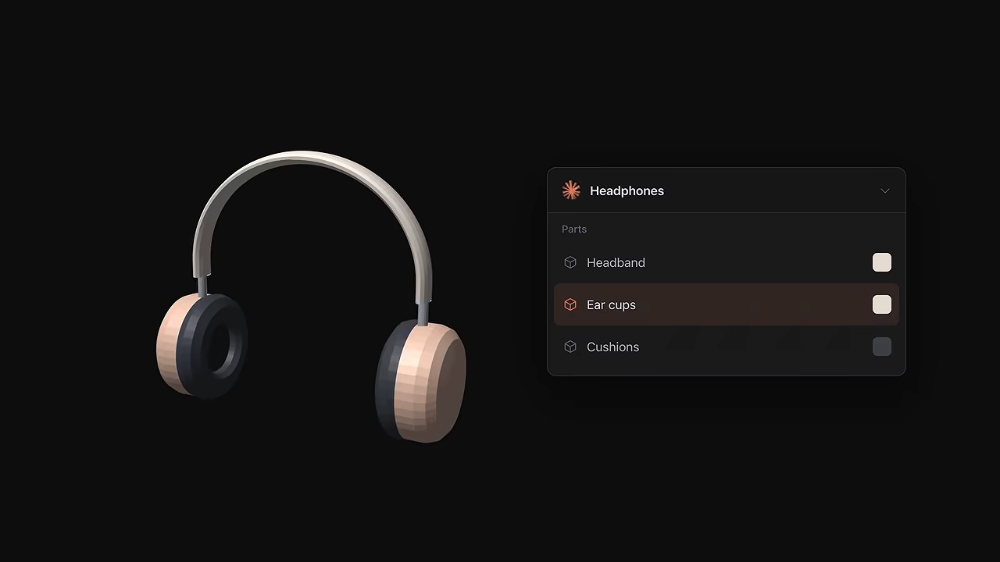
어떻게 만들어지나요
만들고 싶은 이미지를 주고 img2threejs로 3D 모델을 만들어 달라고 하면 돼요. 에이전트는 모델을 단계별로 쌓아요. 한 단계마다 원본 이미지와 비교하고, 다른 점을 먼저 고친 뒤에야 다음 디테일로 넘어가요.
대신 토큰을 많이 쓰고 오래 걸려요. 데모의 벤츠 G63은 터미널에 3시간 4분 동안 돌았다고 찍혀 있어요. 첫 결과가 데모만큼 정밀하지 않으면, 특정 부분을 더 다듬어 달라고 계속 요청하면서 끌어올리면 돼요.
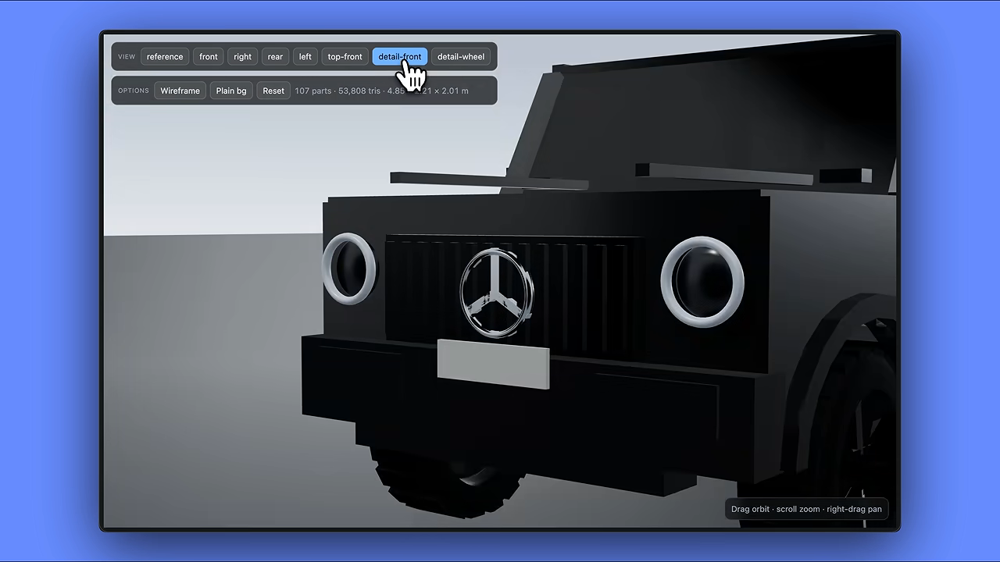
Reticle — 앱이 진짜 돌아가는지 확인해요
에이전트는 앱이 뜨는지, 디자인이 맞는지 정도만 보고 작업을 끝냈다고 해요. 그 뒤에서 결제 버튼이나 저장 기능이 실패하고 있어도 모르죠. 이걸 잡으려면 브라우저 안에서 실제로 무슨 일이 일어나는지 에이전트가 볼 수 있어야 해요.
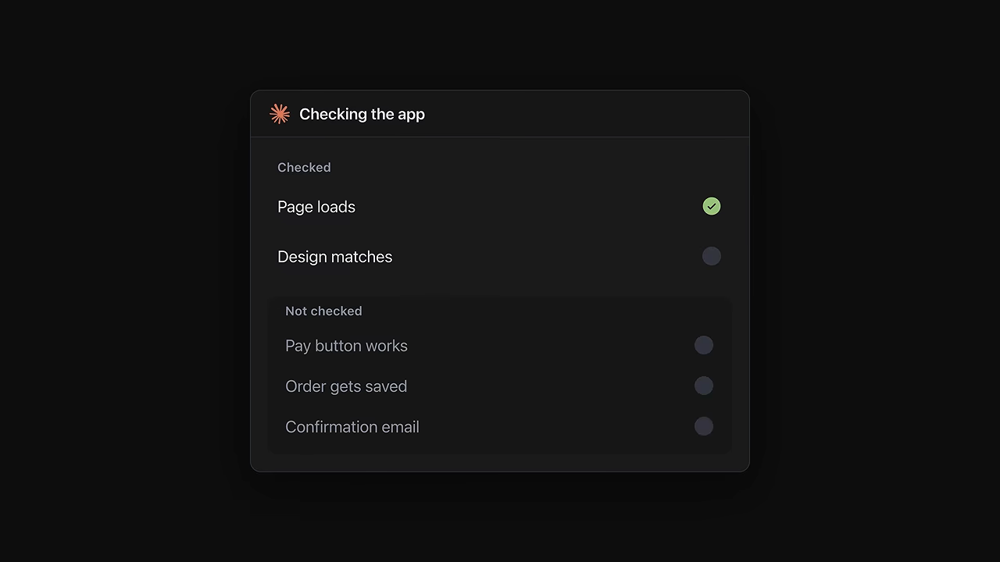
Reticle은 앱이 실행되는 동안 안에서 무슨 일이 일어나는지 에이전트가 따라가게 해 줘요. 한 번 깔아 두면 프롬프트에 말하지 않아도, 에이전트가 앱을 만든 뒤 알아서 브라우저로 열고 사람처럼 써 보며 확인해요.
결론은 세 가지 중 하나
| 판정 | 뜻 | 그다음 |
|---|---|---|
| Worked | 의도대로 동작했어요 | 다음 항목으로 넘어가요 |
| Didn't work | 동작하지 않았어요 | 무엇이 잘못됐는지 설명해 주고, 에이전트가 고친 뒤 다시 시도해요 |
| Couldn't tell | 판단할 정보가 부족해요 | 확실하지 않다는 걸 그대로 알려요 |
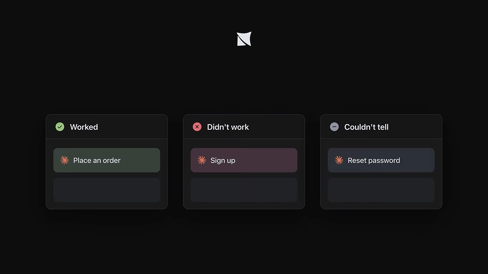
직접 앱을 열면 구석에 Reticle 팝업이 떠요. 여기서 지난 확인 기록을 보면서 무엇이 실패했고 에이전트가 어떻게 고쳤는지 따라갈 수 있어요.
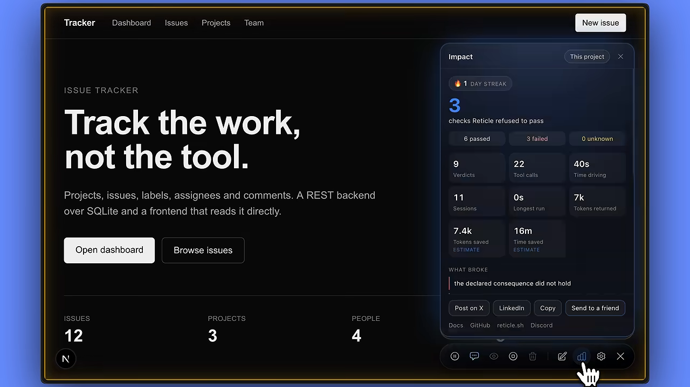
Chisle — 답변과 코드를 짧게
요즘 모델의 답변, 특히 작업 끝에 붙는 요약이 점점 길어지고 있어요. 영상은 Claude 모델에서 이게 더 심하다고 짚어요. 길기만 한 게 아니라 단어 배치가 어색해서 무슨 말인지 알기 어려울 때도 있어요.
Chisle은 에이전트가 말을 줄이고, 작업에 필요 없는 코드를 쓰지 않게 해요. 쓸데없는 설명과 코드에 들어가는 토큰을 줄이는 게 목표예요.
작성자가 공개한 테스트
검색창이 키를 칠 때마다 API를 부르던 걸 디바운스로 바꾸는 작업이에요. 같은 모델, 같은 프롬프트로 Chisle만 넣고 빼서 비교했어요.
| 조건 | 답변 토큰 | 답변 모양 |
|---|---|---|
| Chisle 없이 | 약 1,500 | '흔한 방법들을 보여 드릴게요'로 시작해 범용 훅을 별도 파일로 만들어요 |
| Chisle 사용 | 약 600 | 필요한 코드와 짧은 이유만 남아요 |
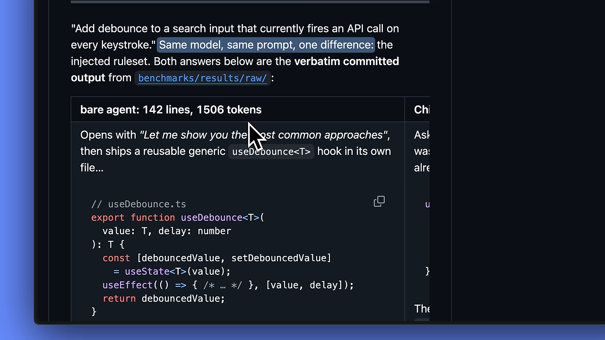
비슷한 일을 하는 Caveman, Ponytail과도 비교했는데, 전체 토큰은 Chisle 쪽이 더 적었다고 해요.
설치하면 들어오는 것
Claude Code 플러그인으로 깔면 스킬 4개와 훅 3개가 함께 들어와요.
| 훅 | 언제 도나요 |
|---|---|
SessionStart | 세션이 시작될 때 |
UserPromptSubmit | 프롬프트를 보낼 때 |
PostToolUse | 에이전트가 도구를 쓴 직후 |
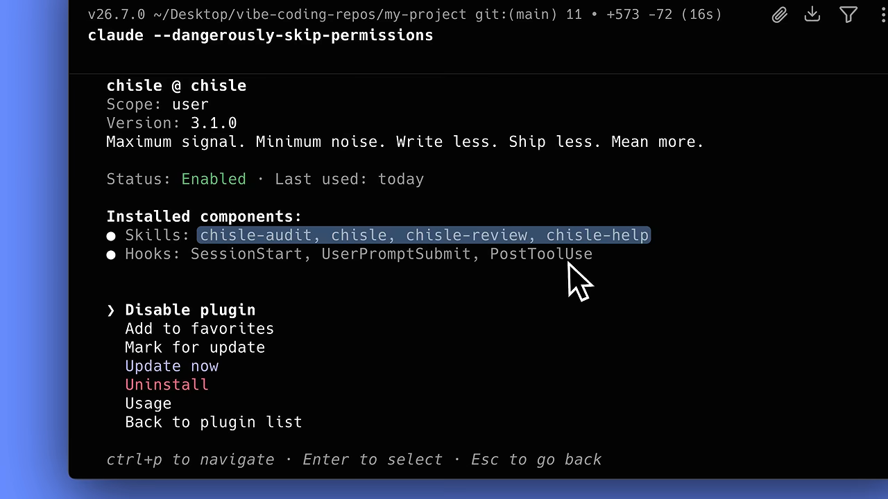
Claude Code에서는 이점이 하나 더 있어요. 도구가 돌려준 출력에서 반복되거나 쓸데없는 텍스트를 에이전트가 읽기 전에 걸러 내요. 컨텍스트가 필요 없는 글로 덜 차고, 읽을 양이 줄어든 만큼 토큰과 비용도 줄어요.
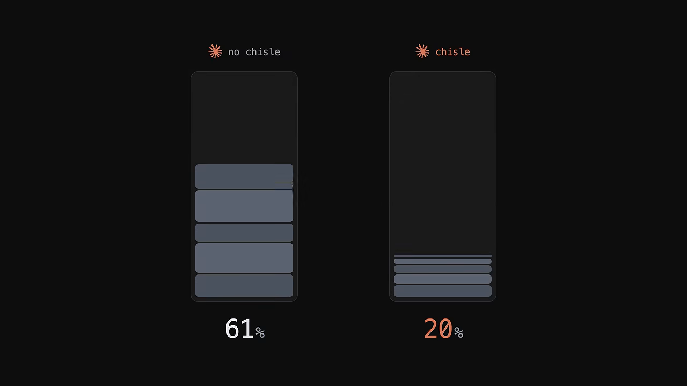
깔고 나면 작업 요약이 훨씬 짧고 직설적으로 바뀌어요. 무엇을 했는지, 바꾼 핵심이 뭔지, 무엇을 건너뛰었는지 순서로 정리돼 나와요.
UI Skills — 맞는 디자인 스킬을 대신 골라 줘요
디자인을 좋게 해 주는 스킬은 많아요. 그런데 저마다 디자인 원칙이 달라서, 많을수록 오히려 고르기가 어려워요. 내 디자인에 맞는 스킬을 찾는 것만으로도 일이에요.
UI Skills는 여러 작가의 디자인 스킬을 모은 라이브러리예요. 에이전트가 이 안을 검색해서, 원하는 디자인에 가장 잘 맞는 스킬을 가져와요.
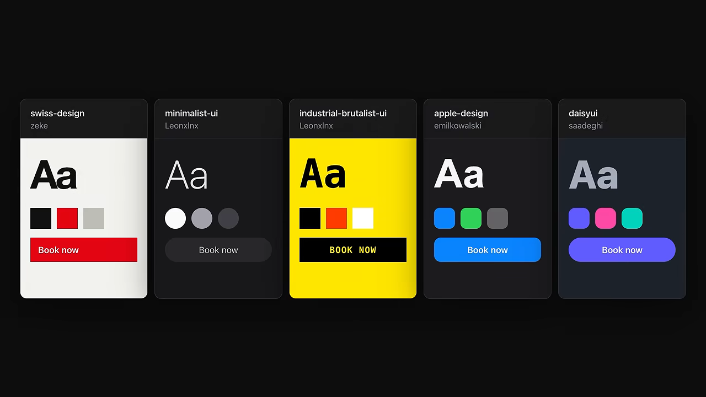
MCP로 쓸까, 터미널로 쓸까
두 가지 방식이 있고 골라 쓰면 돼요. 영상에서는 MCP를 골랐어요. MCP 도구는 세션 내내 에이전트에게 보이기 때문이에요. 터미널 방식을 쓰면 언제 UI Skills를 쓸지 프롬프트나 프로젝트 지침에 직접 적어 줘야 해요.
MCP를 연결하면 에이전트의 MCP 도구 목록에 나타나요. 그다음 원하는 디자인을 말하면서 UI Skills를 쓰라고 하면 돼요. 에이전트는 먼저 라이브러리에서 요청에 맞는 스킬을 찾고, 관련 있는 것만 추려서 그 지침을 가져와 사이트를 만들어요. 디자인 스킬을 미리 하나하나 골라 설치할 필요가 없어요.
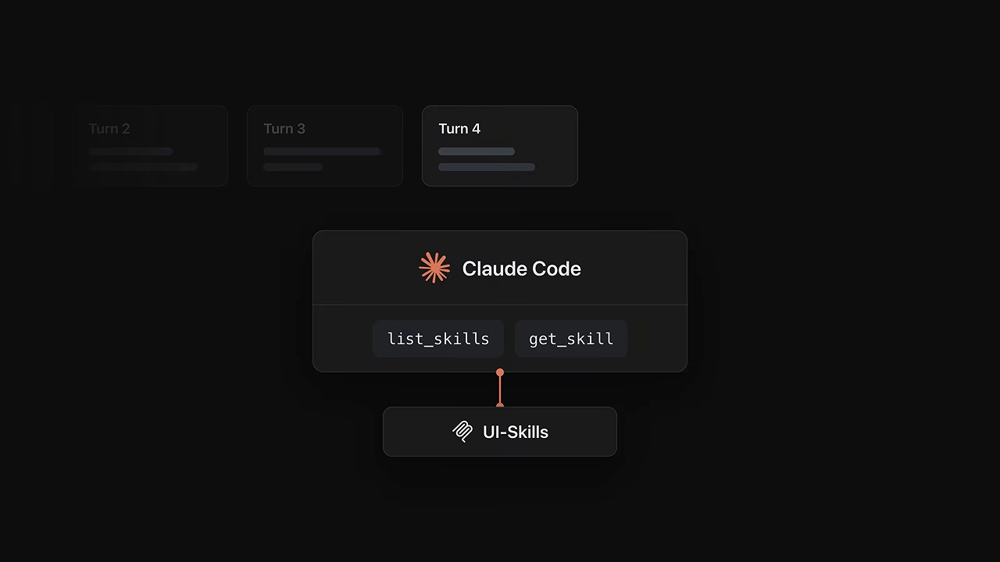
Ouroboros — 만들기 전에 묻고, 만든 뒤 검사해요
앱이 어떻게 동작해야 하는지 자세히 말하지 않으면, 그 빈칸은 에이전트가 마음대로 채워요. Ouroboros는 만들기 전에 그 빈칸을 정리하게 하고, 만든 뒤에는 앱을 검사해서 문제를 에이전트에게 돌려보내요.
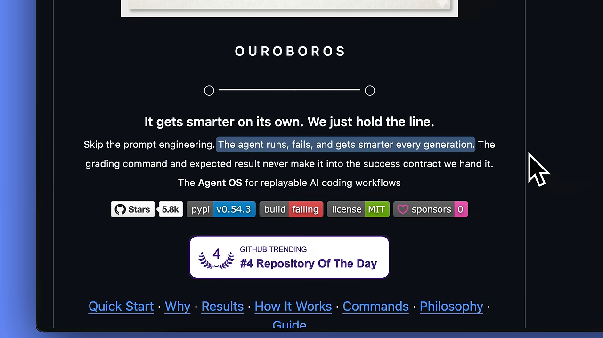
설치는 쓰는 에이전트에 맞는 설정 명령을 따르면 돼요. 터미널에서 돌리는 명령이 하나 들어 있고, 설정 과정이 이걸 에이전트에 연결해서 에이전트가 워크플로를 대신 돌려요.
먼저 스스로 인터뷰해요
만들고 싶은 앱을 설명하고 Ouroboros를 쓰라고 하면, 요청에 대한 질문을 스스로 만들어요. 답은 이미 말한 내용과 프로젝트에서 보이는 것으로 채워요.
- 나중에 바꾸기 쉽고 요청 범위 안에 있는 작은 결정만 스스로 정해요.
- 앱이 해야 할 일 자체가 달라질 수 있는 결정이면 멈추고 사람에게 물어요.
- 정한 가정은 모두 기록해서 무엇이 결정됐는지 볼 수 있어요.
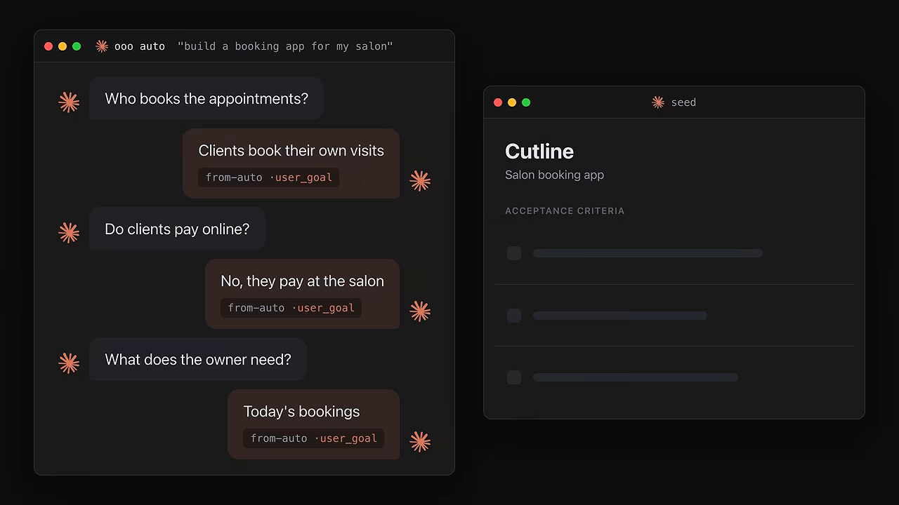
계획을 통과해야 만들고, 만든 뒤엔 따로 검사해요
인터뷰 답은 완성된 앱이 해야 할 일을 적은 계획이 돼요. 만들기 전에 Ouroboros가 이 계획을 검토하고, 통과해야 에이전트가 만들기 시작해요.
다 만들면 계획대로 되는지 검사해요. 이때 앱을 만드는 에이전트의 지시에는 검사 방법도, 기대 결과도 들어 있지 않아요. 실패한 부분만 고치게 하고, 이미 된 부분은 그대로 둔 채 검사를 다시 돌려서 새로 깨진 게 없는지 봐요.
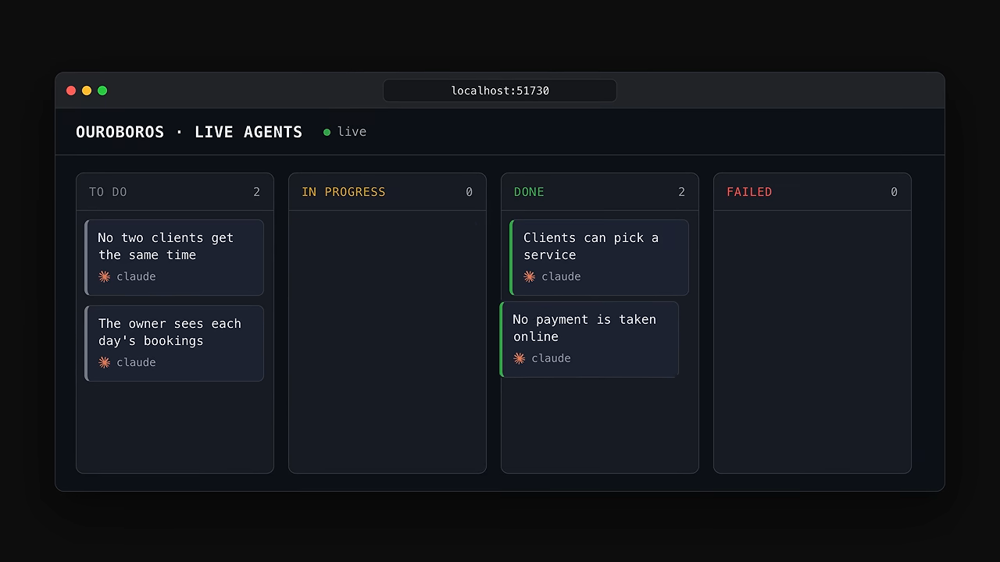
진전이 없거나 시도 횟수 한도에 닿으면, 왜 멈췄는지 알려 줘요.
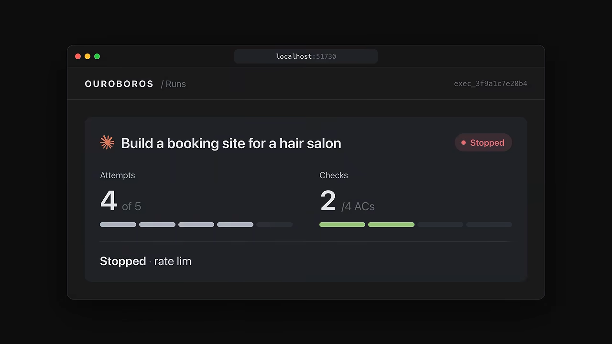
SwiftUI Skills — iOS 앱을 Apple 방식으로
디자인 스킬은 많지만 iPhone 앱이 어떻게 보이고 움직여야 하는지에 맞춘 건 적어요. 에이전트에게 Liquid Glass를 만들어 달라고 하면 블러와 배경을 덧대서 흉내만 내요. 결과는 진짜보다 반투명 버튼에 가깝고, 에이전트는 똑같다고 말해요. Apple이 바꿔 온 기능 변화도 따라가지 못해요.
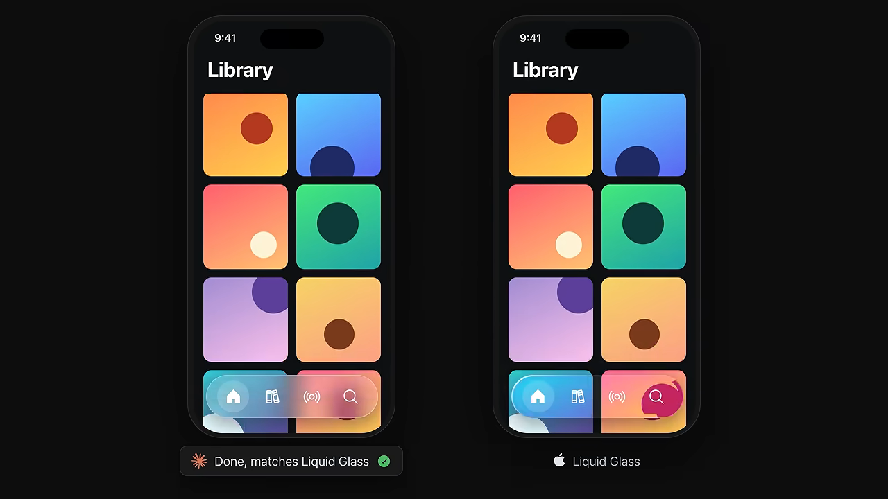
SwiftUI Skills는 Apple의 화면 구성 체계인 SwiftUI로 화면을 제대로 만드는 지침을 담은 저장소예요. Apple의 최근 변화에 맞춰 계속 갱신된다고 해요. 스킬은 두 개예요.
- Liquid Glass 스킬: iOS 26의 기본 버튼과 메뉴를 쓰는 법, 그리고 흔한 실수를 알려 줘요.
- iPhone Duo 스킬: Apple이 최근 낸 iPhone Duo의 넓은 화면에서도 디자인이 맞도록 콘텐츠를 배치하는 법을 다뤄요.
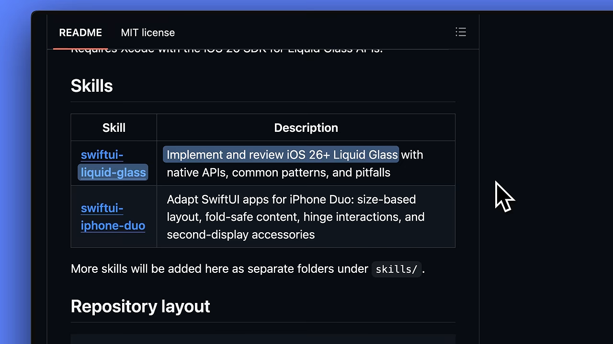
필요한 스킬을 깔고 그 지침대로 만들라고 하면, 에이전트가 Apple의 실제 패턴을 써요. 에이전트 혼자 할 때보다 네이티브 앱에 훨씬 가까워져요.
Caliper — 그 스킬, 정말 도움이 되나요?
스킬을 많이 만들수록 어떤 게 아직 도움이 되는지 알기 어려워요. 모델이 업데이트되면 더 그래요. 새 모델이 스킬이 시키던 일을 이미 알아서 할 수도 있거든요. 그러면 예전엔 쓸모 있던 스킬이 결과는 못 바꾸고 토큰 비용만 늘려요.
Claude Code의 /skill-doctor 명령이 이걸 해 주지 않나 싶을 수 있어요. 이 명령은 스킬마다 컨텍스트를 얼마나 차지하는지, 어떤 스킬이 안 쓰였는지만 보여 줘요. 스킬이 결과를 정말 좋게 만드는지는 알려 주지 않아요.
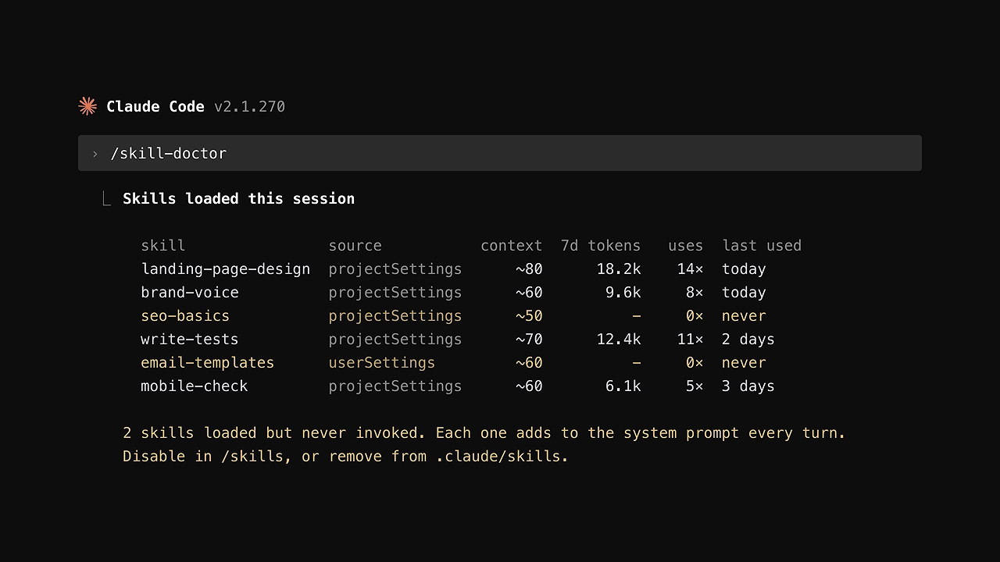
쓴 것과 안 쓴 것을 나란히 비교해요
Caliper는 스킬이 만든 목적대로 동작하는지, 작업에 실제로 영향을 주는지 테스트해요. 같은 작업을 스킬을 쓴 채로, 또 안 쓴 채로 돌려서 결과를 비교해요.
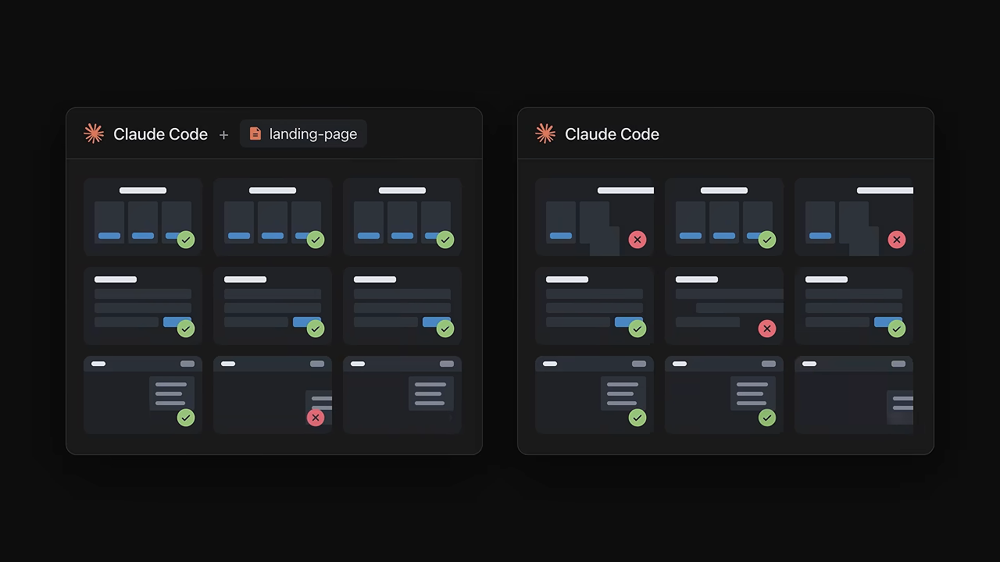
Caliper 자체는 터미널에서 돌고, 에이전트가 이걸 쓰도록 돕는 스킬 두 개가 저장소에 들어 있어요.
| 스킬 | 하는 일 |
|---|---|
grill-skill | 스킬이 무엇을 해야 하는지 사용자를 인터뷰해요. 테스트가 사용자의 의도를 반영하게 해요 |
evaluate-skill | 테스트(eval)를 만들고 돌려요. 테스트 하나는 프롬프트와 기대 결과로 이뤄져요 |
테스트는 스킬 옆에 저장되고, 실행 기록은 .caliper 폴더에 남아서 나중에 다시 볼 수 있어요.
돌리는 순서
만든 스킬에 Caliper를 써 달라고 하면 돼요. 에이전트가 먼저 evaluate-skill로 테스트를 준비하고, 테스트 쓰다가 막히면 grill-skill로 넘어가 인터뷰해요. 테스트가 다 되면 프롬프트를 바꿔 가며 여러 번 돌려요. 일부는 스킬을 쓰고 일부는 안 쓴 채로요.
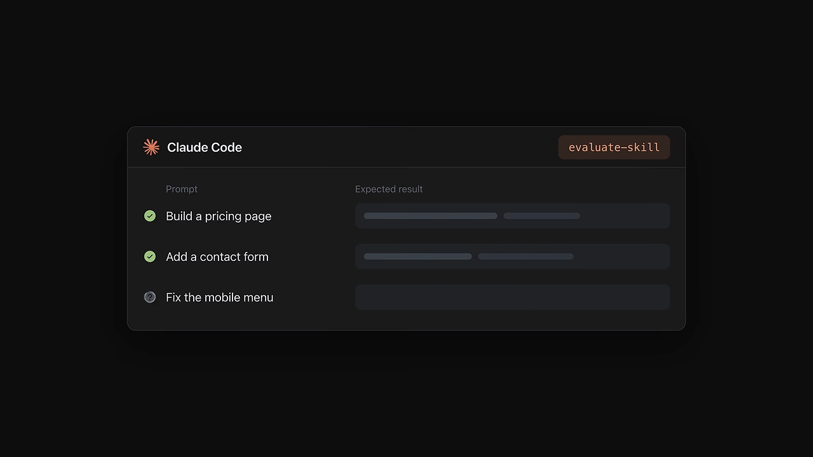
마지막엔 여러 실행에서 무슨 일이 있었는지와 다음에 할 일을 담은 보고서가 나와요. 스킬이 어떤 작업에서 믿을 만하고 어디서 아직 부족한지, 늘어난 토큰만큼 값어치를 하는지 볼 수 있어요. 같은 비교를 MCP 서버나 다른 지침에도 할 수 있어서, 깔아 둔 스킬 말고도 셋업 전체를 점검할 수 있어요.
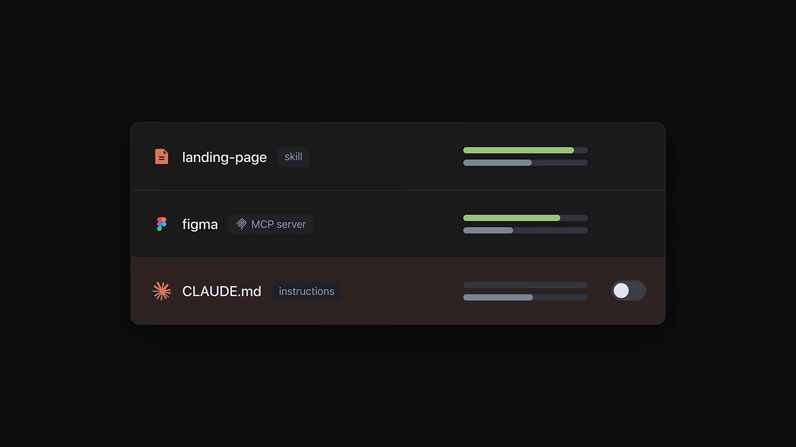
anti-slop — 에이전트의 나쁜 코드 습관 잡기
anti-slop은 에이전트가 코드를 쓸 때 자주 보이는 나쁜 패턴을 걷어 내려고 만든 도구예요. 정해진 코딩 실수를 찾아 에이전트에게 알려 주고 고치게 해요. 사람이 코드를 일일이 읽지 않아도 돼요.
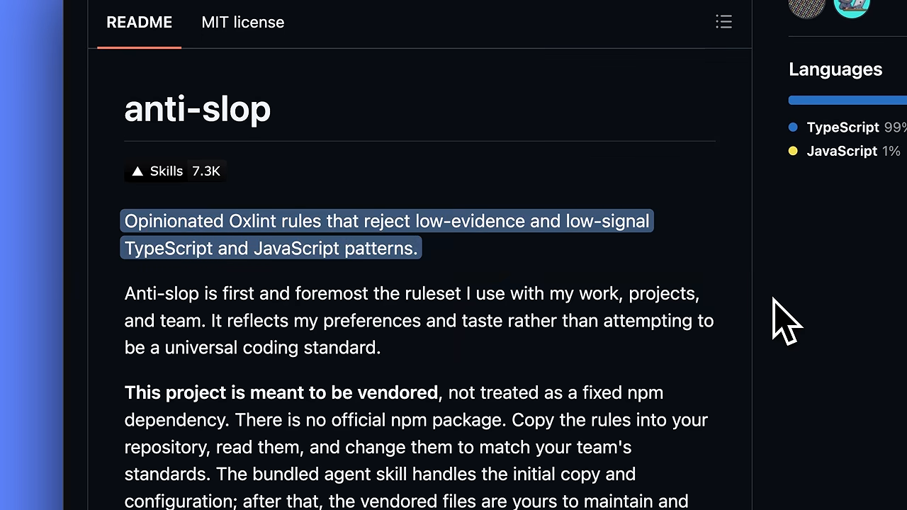
검사는 작성자가 쓴 규칙 묶음으로 해요. 규칙은 크게 두 종류예요.
- 앱을 느리게 하는 불필요한 작업을 잡는 규칙. 예를 들어 목록 하나를 두 번 도는 코드, 매 단계마다 쌓인 데이터를 통째로 복사하는 코드예요.
- 작성자가 코드를 쓰는 방식을 반영한 규칙. 예를 들어 빈 줄이 빠진 곳을 잡아요.
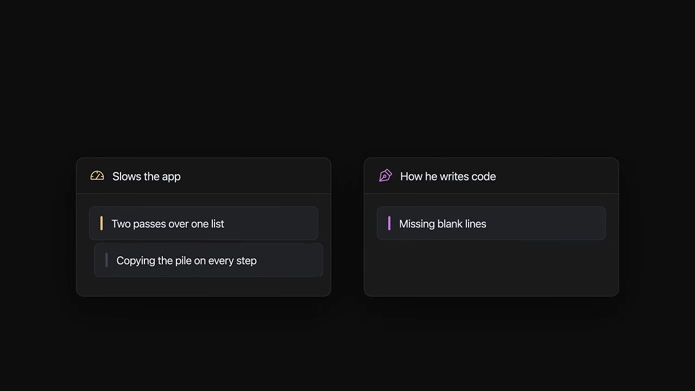
저장소 안내대로 프로젝트에 설치하면 돼요. 스킬을 깔아 두면 에이전트가 작업할 때마다 이 검사를 돌리고 걸린 문제를 고쳐요. 작업을 다 마친 뒤 최종 리뷰를 따로 시킬 수도 있어요.
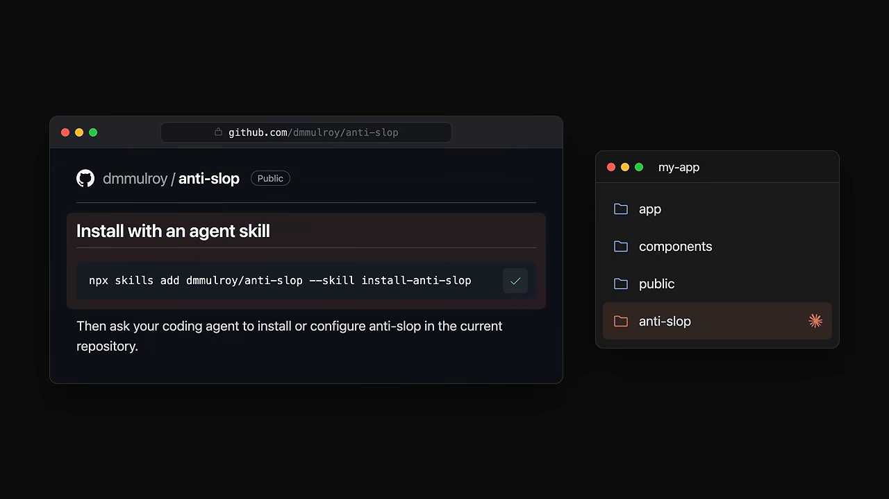